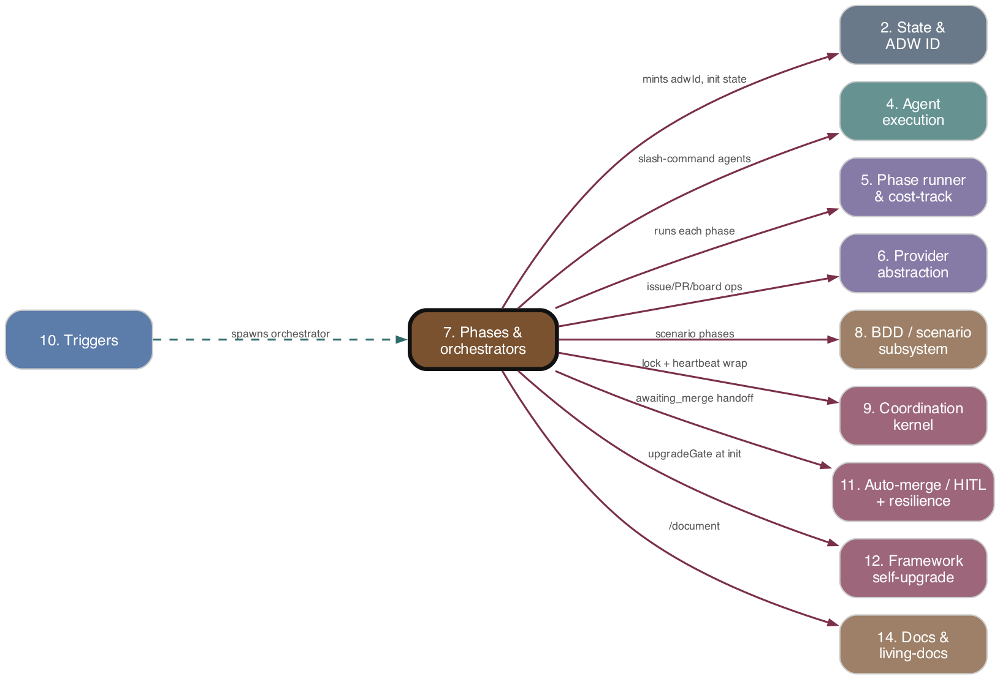

Subsystem 07 of 16
Phases & orchestrators
As-is reference. Ground truth: source code.

Purpose
The linear SDLC pipeline of ADW: the root adws/adw*.tsx entry-point scripts that classify a GitHub issue, route it to a workflow, and compose a sequence of phases (plan → build → test → review → document → PR). Each phase wraps one or more Claude agents (each invoking a slash-command skill) plus git/state side-effects. Issue classification and orchestrator-script routing decide which pipeline runs.
Responsibilities
- Entry points / CLI: each
adw*.tsxparses argv (parseOrchestratorArguments,parseTargetRepoArgs), resolves repo identity, callsinitializeWorkflow, then composes phases insiderunWithOrchestratorLifecycle. - Issue classification & routing:
classifyGitHubIssue/classifyIssueForTrigger(LLM via/classify_issue, with deterministicadw:*label override);getWorkflowScriptmaps classified type → orchestrator script viaissueTypeToOrchestratorMap. - Workflow lifecycle:
initializeWorkflow(fetch issue, classify, resolve adwId, set up worktree, recovery detection, buildWorkflowConfig);completeWorkflow/handleWorkflowError/handleRateLimitPause/handlePhaseTimeout/handleWorkflowDiscardedterminal handlers. - Phase implementations: plan, build (with token-limit/compaction recovery + progress gate), PR, review (passive judge) + review-patch cycle, document, diff-evaluation, install, and the PR-review sub-pipeline (
prReviewPhase). - Agents: thin wrappers (
runPlanAgent,runBuildAgent,runReviewAgent,runPatchAgent,runRefactorAgent,runPullRequestAgent,runDocumentAgent,runDiffEvaluatorAgent,runInstallAgent,runCommitAgent) each mapping to a slash command.
Key Files
| Path | Role |
|---|---|
| --- | --- |
adws/adwSdlc.tsx |
Full SDLC orchestrator (plan‖scenario → align → build → stepDef → unit → scenario-fix loop → review/patch loop → document → PR → awaiting_merge). |
| --- | --- |
adws/adwChore.tsx |
Chore pipeline with Haiku diff-gate escalation to review→document. |
| --- | --- |
adws/adwPatch.tsx |
Direct patch: /patch → build → PR (no review/test). |
| --- | --- |
adws/adwPlanBuild*.tsx, adwPlan/Build/Test/Document.tsx, adwPrReview.tsx |
Composition variants — same phase functions, different sequences. |
| --- | --- |
adws/core/issueClassifier.ts |
LLM classification (/classify_issue), adw:* label override chokepoint. |
| --- | --- |
adws/core/workflowMapping.ts |
getWorkflowScript(issueType) → script (fallback adwPlanBuildTest.tsx). |
| --- | --- |
adws/types/issueRouting.ts |
issueTypeToOrchestratorMap, commit/branch prefix maps. |
| --- | --- |
adws/core/orchestratorCli.ts |
argv parsing (parseOrchestratorArguments, extractCwdOption, --issue-type, --target-repo, buildRepoIdentifier). |
| --- | --- |
adws/core/constants.ts |
OrchestratorId.* name constants. |
| --- | --- |
adws/phases/workflowInit.ts |
initializeWorkflow, WorkflowConfig interface. |
| --- | --- |
adws/phases/workflowCompletion.ts |
Terminal handlers (complete/error/pause/timeout/discard). |
| --- | --- |
adws/phases/planPhase.ts |
Plan phase + continuation-prompt builders. |
| --- | --- |
adws/phases/buildPhase.ts |
Build phase + token/compaction recovery + progress gate. |
| --- | --- |
adws/phases/reviewPhase.ts |
Passive review judge + executeReviewPatchCycle. |
| --- | --- |
adws/phases/prPhase.ts, documentPhase.ts, diffEvaluationPhase.ts, installPhase.ts, prReviewPhase.ts, prReviewCompletion.ts |
Remaining phase implementations. |
| --- | --- |
adws/phases/index.ts, adws/workflowPhases.ts |
Barrel re-exports consumed by orchestrators. |
| --- | --- |
adws/agents/planAgent.ts, buildAgent.ts, reviewAgent.ts, patchAgent.ts, refactorAgent.ts, prAgent.ts, documentAgent.ts, diffEvaluatorAgent.ts, installAgent.ts, gitAgent.ts |
Per-phase agent wrappers → slash commands. |
Behavior & Flows
- Routing: a trigger classifies an issue (LLM
/classify_issueunless an unambiguousadw:<type>label overrides).getWorkflowScriptmaps{/bug,/feature}→adwSdlc.tsx,/chore→adwChore.tsx,/pr_review→adwPlanBuild.tsx; unmapped →adwPlanBuildTest.tsx. The chosen script is spawned with the issue number (+ optional--issue-type,--target-repo). - Init (
initializeWorkflow): pre-flight Claude CLI check → activate GitHub App auth → fetch issue →detectRecoveryState→ classify (or use provided type) → resolve adwId (provided ▸ recovered-from-comment ▸ deterministic-branch fallback ▸ generated) → set up/reuse worktree (target-repo workspace if external) → upgrade gate (target repos only; may park+exit) → init state stores → fire-and-forget board setup → load.adw/project config +.github/adw.yml→ allocate dev-server port → returnWorkflowConfig. - SDLC pipeline (
adwSdlc): install → (plan ‖ scenario, parallel) → alignment → build → stepDef → unit-test →runScenarioTestFixLoop→ orchestrator-level review→patch→retest loop (boundedMAX_REVIEW_RETRY_ATTEMPTS) → document → PR → proof-publish → writeawaiting_merge(does NOT callcompleteWorkflow; merge handled later by cron/adwMerge). - Build recovery: on token-limit or compaction, build saves progress, re-wraps the plan with
buildContinuationPrompt(git-state-authoritative once checkpoint commits exist), and retries up toMAX_CONTEXT_RESETSper batch; at batch boundaries commits-if-dirty and evaluates the progress gate (evaluateProgressGate,MAX_PROGRESS_CHECKPOINTS) which can abort. - Chore pipeline: install → plan → build → stepDef → unit → scenario-fix → diff-evaluation (
/diff_evaluator, Haiku).safe⇒ straight to PR;regression_possible⇒ post escalation comment, run review→patch loop + document, then PR. Pre-approves PR unlesshitllabel present. - Review is a passive judge:
runReviewAgentreads the scenario-proof file and emitsReviewIssue[]withissueSeverityandremediationStrategy(patch|refactor).executeReviewPatchCycleapplies patch blockers (runPatchAgent//patch) and refactor blockers (runRefactorAgent//refactor), commits+pushes; orchestrator re-runs scenario tests then re-reviews. - Phase wrapping: every phase runs through
runPhase/runPhasesParallel(05. Phase runner & cost-tracking composition">subsystem 5) which times, cost-tracks, and convertsRateLimitError→pause. Each phase posts a stage comment viapostIssueStageCommentand honorsshouldExecuteStage(recovery skip) usingRecoveryState.
Data Structures
WorkflowConfig(workflowInit.ts): the shared phase context —issueNumber, adwId, issue, issueType, worktreePath, defaultBranch, logsDir, orchestratorStatePath, orchestratorName, recoveryState, ctx (WorkflowContext), branchName, applicationUrl, targetRepo?, repoContext?, projectConfig, adwYmlConfig, installContext?, completedPhases?, topLevelStatePath, gitContext?.PRReviewWorkflowConfig:{ base: WorkflowConfig, prNumber, prDetails, unaddressedComments, ctx }.OrchestratorArgs:{ issueNumber, adwId, cwd, providedIssueType }.IssueClassificationResult:{ issueType, success, adwId?, issueTitle? }.ReviewIssue:{ reviewIssueNumber, issueDescription, issueResolution, issueSeverity, remediationStrategy? }.DiffEvaluationPhaseResult: addsverdict: 'safe' | 'regression_possible'.OrchestratorIdconstant map;issueTypeToOrchestratorMap,commitPrefixMap,branchPrefixMap,branchPrefixAliases.
Public Interface
- CLI:
bunx tsx adws/<orchestrator>.tsx <issueNumber> [adwId] [--issue-type <t>] [--cwd <p>] [--target-repo owner/repo] [--clone-url <u>]. - Exported routing:
getWorkflowScript,classifyGitHubIssue,classifyIssueForTrigger. - Exported CLI helpers:
parseOrchestratorArguments,parseTargetRepoArgs,buildRepoIdentifier,extractCwdOption,printUsageAndExit. - Exported phase functions (via
adws/workflowPhases.ts):initializeWorkflow,executeInstallPhase,executePlanPhase,executeAlignmentPhase,executeBuildPhase,executeStepDefPhase,executeUnitTestPhase,executeScenarioTestPhase,runScenarioTestFixLoop,executeReviewPhase,executeReviewPatchCycle,executeDocumentPhase,executeDiffEvaluationPhase,executePRPhase,executeProofPublishPhase,completeWorkflow,handleWorkflowError,handleRateLimitPause, plus theexecutePRReview*family.
Dependencies
- Upstream (depends on):
- 1. Config & Environment —
loadProjectConfig,readAdwYmlConfig,ANTHROPIC_API_KEY/GITHUB_PAT/CLAUDE_CODE_PATH. - 2. State & ADW ID —
AgentStateManager,generateAdwId, top-level state,RecoveryState/shouldExecuteStage. - 3. GitContext — worktree setup, branch resolution, push, diff,
buildLaunchGitContext. - 4. Agent execution —
runClaudeAgentWithCommandunderlying every agent wrapper. - 6. Provider abstraction —
RepoContext(issueTracker,codeHost,boardManager),RepoIdentifier. - Downstream (depended on by):
- 10. Triggers — call
classifyIssueForTrigger/getWorkflowScriptand spawnadw*.tsx. - 9. Coordination kernel —
runWithOrchestratorLifecyclewraps every orchestrator body. - 11. Auto-merge / HITL — orchestrators write
awaiting_merge;adwMerge/cron consume it.
Interactions
| Other subsystem | Direction | What is exchanged |
|---|---|---|
| --- | --- | --- |
| 5. Phase runner & cost | calls → | every phase runs via runPhase/runPhasesParallel; returns {costUsd, modelUsage, phaseCostRecords}; CostTracker accumulates. |
| --- | --- | --- |
| 4. Agent execution | calls → | agent wrappers invoke runClaudeAgentWithCommand with model/effort from getModelForCommand/getEffortForCommand. |
| --- | --- | --- |
| 8. BDD / scenario | calls → | composes executeScenarioPhase, executeStepDefPhase, executeScenarioTestPhase, runScenarioTestFixLoop, executeProofPublishPhase; consumes scenarioProofPath. |
| --- | --- | --- |
| 9. Coordination kernel | wrapped-by ← | runWithOrchestratorLifecycle (spawn lock); RateLimitError → handleRateLimitPause → pause queue. |
| --- | --- | --- |
| 6. Provider abstraction | calls → | repoContext.issueTracker.moveToStatus/commentOnIssue, codeHost.createPullRequest, boardManager.*. |
| --- | --- | --- |
| 11. Auto-merge / HITL | writes → | workflowStage: 'awaiting_merge', PR approval, hitl label check (chore). |
| --- | --- | --- |
| 12. Framework self-upgrade | calls → | initializeWorkflow runs runUpgradeGate for target repos (may park+exit). |
| --- | --- | --- |
| 13. Cost telemetry & D1 | produces → | createPhaseCostRecords/PhaseCostRecord, persistTokenCounts, formatCostCommentSection. |
| --- | --- | --- |
| 14. Docs & living-docs | calls → | executeDocumentPhase (/document) + non-fatal executeDocsPostWriteSelfCheck. |
CLAUDE-CODE TOUCHPOINTS
- Classification:
/classify_issue. - Plan: issue type used directly as command —
/feature,/bug,/chore,/pr_review. - Build:
/implementor/implement-tdd(auto-routed when@adw-{issue}scenarios exist). - Review:
/review; patch/patch; refactor/refactor. - PR:
/pull_request; commit/commit; branch slug/generate_branch_name. - Document:
/document. Install/prime:/install. Diff gate:/diff_evaluatoron Haiku (chore escalation decision).
PRD Divergences
orchestrator-coordination-resilience.mddescribes the resilience surface (pause/resume, phase timeout, progress gate) — all present in code (handleRateLimitPause,handlePhaseTimeout,evaluateProgressGate). No divergence observed.test-review-refactor.mddescribes review as a passive judge with patch/refactor remediation strategies and an orchestrator-level retry loop — matchesreviewPhase.ts+executeReviewPatchCycleexactly.tdd-bdd-integration.md(plan‖scenario parallel, alignment, build auto-routing to TDD) — matchesadwSdlccomposition.- Minor: routing PRDs predate the
adw:*label-override chokepoint and the deterministic-branch adwId fallback; both are code-only refinements not reflected in PRDs.